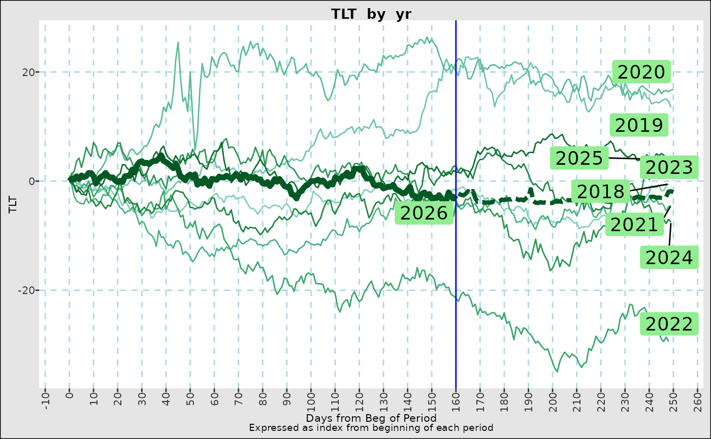
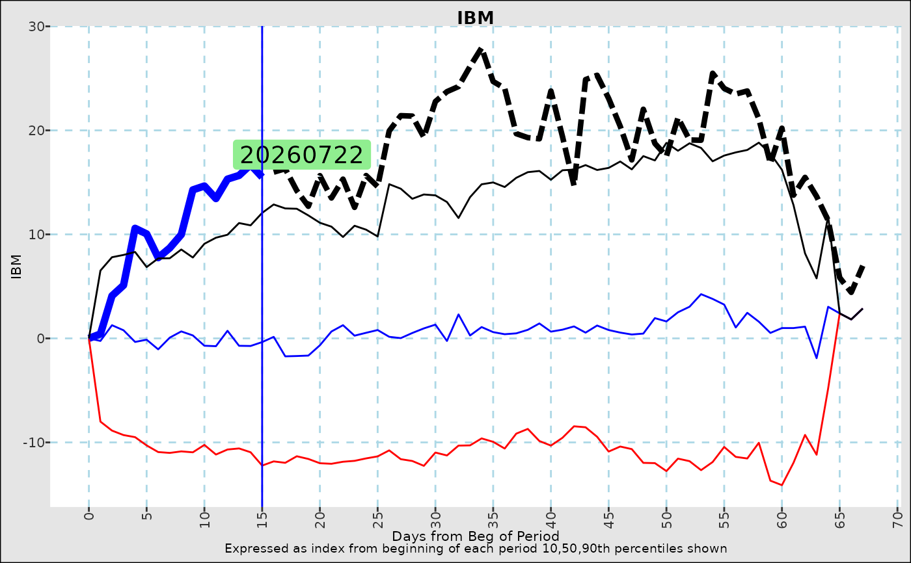

Flexible and general seasonality graphs.
Usage
fg_seasonalstudy(
indta,
seasonaltype = "yr",
seasonaldateset = NULL,
day_offset = 0,
bdaysonly = TRUE,
graphtype = "flex",
normalize = "",
projectfwd = "",
projfwd_wt = 0.9,
yvar = "value",
title = NULL,
yrange = NULL,
n_color_switch = 7,
n_hex_switch = 20,
line_aes_set = "lines",
line_on_lastdate = TRUE,
killbad_eop = FALSE,
return_dates = FALSE
)Arguments
- indta
A data.frame with at least one date column and a numeric column with the name given by
yvar- seasonaltype
(default:
"yr") A string denoting the periodicity of the analysis, must be in one ofc("yr","qtr","mo","wk",IMMroll","optmo","optqtr"). Not used ifseasonaldatasetis specified instead- seasonaldateset
(default:NULL) An optional dataset with two columns: A Date column defining each period, and possibly a character variable with a period identifier.
- day_offset
(default: 0) Number of days (determined by bdaysonly) to offset each period. Applies only to
c("yr","qtr","mo","wk")- bdaysonly
(default:TRUE) Only consider NYSE business days.
- graphtype
(default: "flex") One of the following
graphtypeDescription lineA line for every period, with identifiers placed near the end hexA density plot for each day of the seasonal period, with the last seasonal period kept as a line flexA line graph if there are less than n_hex_switchseasonal periodssstatA line graph showing 10tyh, 50th, and 90th percentiles of values for each day in a seasonal period - normalize
(default ""). How to normalize each period. Default is no normalization. Other options are
normalizeDescription relativeOlder seasonal periods adjusted to match beginning of latest period indexEach seasonal period is expressed as index from beginning of each period - projectfwd
(default "") Project forward based on same number of days in seaonal period. Default is no projection.
normalizeDescription meanUse mean (by days in seasonal period) of each cumulative percentage change from the start of the period weightedWeight previous period cumulative percantge change with an expoential decay using projfwd_wt** (Periods back)- projfwd_wt
See above
- yvar
(default:
"value") Series to use inindta- title
(default: NULL) Title for graph.
- yrange
(default: NULL) y axis Range for which to focus data.
- n_color_switch
(default 7) Number of periods past which lines will be colored by a descending scale.
- n_hex_switch
(default 20) Number of periods past which a
hexgraph will be used, ifflexis chosen above.- line_aes_set
(default
"lines") Aes color set for discrete lines.- line_on_lastdate
(default TRUE) Add a vertical line at the last observations day in period.
- killbad_eop
(default FALSE): DO not show periods for which there are at least 60% of the mean number of observations per day of the seasonal period. If used, this helps to curtail extreme moves at the end of a period. For example, this would redact the 366th day of the year.
- return_dates
(default: FALSE) Return
list(graph,dates)instead of just the graph.
Value
a ggplot() object displaying seasonality
Examples
require(data.table)
assetcols <- c("EEM","IBM","QQQ","TLT")
eqtyidx<-eqtyrtn[,(assetcols):=lapply(.SD,\(x) 100*(exp(cumsum(fcoalesce(x,0))))),
.SDcols=assetcols]
fg_seasonalstudy(eqtyidx,yvar="TLT",seasonaltype="yr",normalize="index",projectfwd="mean")

# Earnings seasons
earnings_dates <- earnings_ibm[,.(reportedDate,divdt=format(reportedDate,"%Y%m%d"))]
fg_seasonalstudy(eqtyidx,yvar="IBM",seasonaldateset = earnings_dates,graphtype="stat",
normalize="index",projectfwd="mean")
